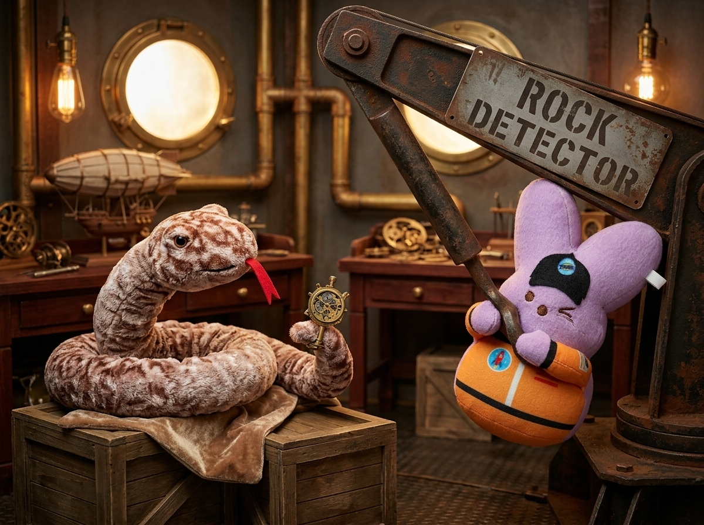

The Great Hyphen Catastrophe of Launchpad 9
Being a Comedic & Instructive Account of Peepstronaut, Hissy, and the Perils of the Uncoupled Modifier
Chapter I — The Heavy-Rock Conundrum
Inside the cavernous, rivet-studded hangar of High Orbital Launchpad 9, the air hummed with the rich scent of warm machine oil, hot ozone, and spiced lemon tea. T-minus forty minutes remained before the maiden flight of the Starlight Wanderer, and the staging bay was a flurry of clockwork cranes and brass cargo hoppers. At the center of the hubbub stood Cadet Peepstronaut, a plush marshmallow-bunny of soft lavender felt, clad in a crisp orange flight suit emblazoned with a crimson rocket patch. Upon his brow rested a jaunty black astronaut flight cap, and in his paws he clutched the official expedition cargo manifest with solemn, unblinking devotion.
Up in the overhead ceiling conduits, coiled gracefully around an insulated copper steam pipe, was Hissy. A seasoned wilderness scout and explorer of exceptional agility, the plush python possessed a handsome coat of mottled brown and tan scales, punctuated by a bright red felt forked tongue that flicked with acute concentration. Gripping a brass hex-wrench with the agile tip of his tail, Hissy called down from the rafters.
"Peepstronaut, my dear fellow!" hissed Hissy cheerfully. "We need to calibrate the planetary survey instruments before the fuel pumps engage. Hand me the heavy-rock detector from storage locker four!"
"Aye-aye, Commander Hissy!" Peepstronaut squeaked with zealous military precision. He turned to the locker, adjusted his black cap, and ran his plush paw down the stenciled metal plates. His dark embroidered eyes widened. There, printed upon a peeling placard in bold block letters, were the words: HEAVY ROCK DETECTOR.
Peepstronaut gasped. "Good heavens. The manifest was not exaggerating."
Five minutes later, a terrifying metallic shriek echoed across the polished parquet floor. Hissy peered over the brass conduit in alarm. Creeping slowly down the center aisle was Peepstronaut, his purple ears pinned flat with monstrous exertion, his orange-sleeved paws straining against an iron tow-chain. Behind him rolled an eight-hundred-pound, steam-powered dockyard salvage crane with rusted iron counterweights, groaning castors, and a colossal steel boom.

"Peepstronaut!" Hissy cried, dropping down three pipe tiers in disbelief. "By the great constellation of Orion, why are you hauling the shipyard's heaviest industrial crane into our delicate navigation bay?!"
"You asked for the heavy rock detector!" Peepstronaut panted proudly, wiping a speck of lint from his lavender cheek. "And let me assure you, this detector is extraordinarily heavy! It took three steam winches just to unhook it from the drydock wall! It detects ordinary rocks, but it weighs half a ton!"
Hissy slapped a mottled plush coil against his forehead. "No, no, a thousand times no! Look at the missing mark of punctuation! What we need is a compound adjective! When two words join forces to describe a single noun as a unified team, they must be welded together with a hyphen!"
Hissy reached with his tail into a modest velvet-lined cedar drawer beside the workbench and lifted out a shining, pocket-sized brass instrument with a delicate glass dial. "This is a heavy-rock detector. The hyphen marries the adjective heavy to the noun rock, turning them into a single modifying unit before the noun detector. It means a small, lightweight device designed to analyze dense mineral ores—not an eight-hundred-pound piece of ironmongery!"
Peepstronaut blinked, his ears slowly rising. "Oh! The hyphen acts like a coupling bar on a train carriage! Without it, heavy and rock act as two separate words, so the detector itself became heavy!"
"Precisely," said Hissy, catching his breath. "Now, let us avoid further calamity. Climb up here and bring me twenty four-inch cables to link the circuit boards."
"Right away!" chirped Peepstronaut. He bounded over to the wire rack and returned a moment later, beaming with triumph as he presented a single, solitary cable measuring exactly two feet in length.
Hissy stared at the single wire. His red forked tongue twitched in silence. "Peepstronaut... where are the other nineteen cables?"
"Other nineteen?" Peepstronaut asked, puzzled. "You asked for a twenty-four-inch cable! Here it is—one magnificent, two-foot line!"
"Aha!" groaned Hissy with a laugh. "Behold the peril of the stray hyphen! I asked for twenty four-inch cables—twenty individual cords of modest length! You have brought me a single twenty-four-inch cable! If you hyphenate twenty-four, it becomes one number describing one long cable. If you keep twenty separate, it is the quantity of small cables! A misplaced hyphen can rewire the entire universe!"
Chapter II — Her Majesty’s Boiler & The Martian Mistake
With the cables sorted and the eight-hundred-pound crane rolled safely back to the shipyard wall, the two companions descended into the warm, rumbling belly of the starship's boiler room. Clockwork pressure gauges hissed cheerfully, and copper steam pipes spiderwebbed across the vaulted ceiling. T-minus twenty minutes glowed upon the brass chronometer.
Hissy slithered toward the primary ignition manifold, expecting the pre-heater to be glowing with welcoming warmth. Instead, he found the furnace stone-cold. Standing stiffly beside the massive copper cylinder was Peepstronaut. The lavender bunny had donned a pair of spotless white cotton gloves and was balancing a silver tray containing a delicate porcelain teapot, two matching cups, and a plate of shortbread biscuits.
"Peepstronaut!" Hissy hissed in utter astonishment, coiling around a steam valve. "Why is the pre-heater unlit? The main ignition sequence begins in twelve minutes!"
"Hush, Hissy!" whispered Peepstronaut in reverent, hushed tones, gesturing toward the gleaming brass nameplate riveted to the copper tank. "Look at the plaque! It is stamped in magnificent gilded letters: VICTORIAN BOILER! It possesses a proud, capitalized crown upon its initial!"
"And what of it?" asked Hissy.
"Why, it belongs personally to Queen Victoria of the British Empire!" Peepstronaut replied earnestly, adjusting his tea tray. "One does not simply ignite Her Majesty's personal water heater without offering formal afternoon tea and awaiting royal diplomatic assent! I have been listening for the royal carriage on the launchpad gantry!"
Hissy let out a merry chuckle that rattled the steam pipes. "My dearest, most loyal cadet! That is not a personal possession—it is a proper adjective!"
Peepstronaut’s ears tilted. "A proper adjective?"
"Indeed!" Hissy explained, tapping the gilded letters with his smooth tail tip. "Just as we learned that a proper noun names a specific person, place, or nation—like Victoria, Britain, or Mars—a proper adjective is a descriptive word derived from that proper noun. It describes a common noun while proudly retaining its tall capital letter crown!"
"So the boiler does not belong to the Queen?" Peepstronaut asked, looking down at his tea cups.
"It was built in the Victorian architectural style—with grand filigree, solid copper rivets, and elegant steam manifolds," Hissy said warmly. "Just as we speak of Venetian glass, Grecian marble, or a Swiss chronometer, the proper adjective tells us the heritage or style of the object, inheriting the capital letter of its parent noun. But Queen Victoria is not boarding our spacecraft today. Turn the valve!"
Peepstronaut set down the silver tray and gave a sheepish grin. "Ah! And that explains the crate in the airlock! It was labeled Martian soil-sampler. Because it wore a capital M, I thought the sampler had been knighted! But it simply means it is an instrument calibrated for the soil of planet Mars!"
"Spot on!" praised Hissy. "You have mastered the crown of the proper adjective!"
With a joyful twist of Peepstronaut’s plush paws, the brass valve spun open. Golden flame surged through the flue, and the Victorian boiler began to thrum with deep, rhythmic power.
Chapter III — The Hyphen-Welder at T-Minus Two
T-minus five minutes. The staging alarms sang out in clear, ringing chimes across Launchpad 9. Peepstronaut and Hissy scrambled up the iron gantry to the primary boarding hatch of the Starlight Wanderer. The sleek ship was nearly sealed for departure, but as Hissy inspected the exterior airlock ring, his keen explorer’s eye caught a critical flaw: a heavy outer thermal plate had vibrated loose during pre-flight pressurization.
"The thermal gasket is unseated!" Hissy shouted over the roaring exhaust blowers. "We need adhesive immediately! Fetch the fast-acting glue from the emergency outfitting satchel!"
Peepstronaut dashed to the satchel, seized a tube labeled FAST ACTING GLUE, and hurried back. But instead of applying it to the loose plate, the lavender cadet squeezed a modest dollop onto a steel workbench, pulled a gold pocket stopwatch from his belt, and leaned forward with intense, solemn concentration.
Ten seconds passed. Twenty seconds passed.
"Peepstronaut!" Hissy gasped, dodging a hiss of venting vapor. "What under the sun are you doing?! The countdown is at three minutes!"
"I am waiting for the glue to perform!" Peepstronaut called back earnestly over the din. "The label said fast acting glue, but it hasn't delivered a single dramatic monologue, nor has it performed a Shakespearean soliloquy! It is acting terribly slowly, Hissy! It hasn't even taken a bow!"
Hissy’s eyes twinkled with exasperated delight. "Peepstronaut, it is not an actor upon a stage! It is fast-acting glue! When an adverb or adjective joins with a participle before a noun, the hyphen binds them into a single descriptor: it means adhesive that hardens quickly!"
With lightning speed, Hissy drew the handheld brass hyphen-welder with his tail. With a brilliant golden SNAP, he fused the words upon the tube into a gleaming, unified title: FAST-ACTING GLUE.
Instantly understanding the true mission of the compound modifier, Peepstronaut smeared the compound adhesive along the titanium seam. He pressed the plate flush against the hull, and within three heartbeats, the bond crystallized into diamond-hard security.
Together, they bounded through the circular hatchway into the cockpit. As the heavy airlock door sealed shut, Hissy and Peepstronaut strapped themselves into their plush velvet navigation chairs. Before them, the master telemetry dashboard glowed in flawless grammatical and mechanical order:
✦ Steam-powered Gyroscope: Locked ✦
✦ Martian-calibrated Thrusters: Primed ✦
✦ High-pressure Fuel Lines: Secure ✦
✦ Victorian-engineered Hull: Pressurized ✦
"T-minus ten seconds... nine... eight..." the automated chime called out.
Peepstronaut adjusted his black flight cap and flashed a proud, happy smile at his serpentine mentor. "Every proper adjective is proudly crowned, and every compound modifier is securely hyphen-linked, Commander!"
"All systems in perfect syntactic harmony!" Hissy hissed with a triumphant laugh. "Ignition!"
With a majestic surge of golden steam and roaring starlight, the Starlight Wanderer lifted from Launchpad 9, ascending into the infinite celestial deep—a grand vessel guided by two true friends who would never, ever forget the power of a single well-placed hyphen.